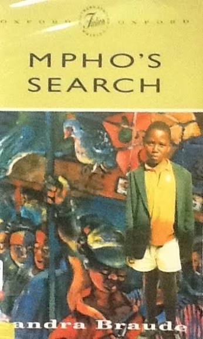

Royal Crest AcademyLITERATURE IN ENGLISH
A reader’s guide · Literature in English
Mpho’s
Search
Search
by Sandra Braude

Setting
Two places, one journey.
The countryside
Baas du Toit’s farm
The city
Johannesburg
Word power
Afrikaans
baas (noun)
boss · master
→ shows who holds the power
The story begins
1 · A sheep goes missing
Mpho is forced off the farm.
2 · The search
To Johannesburg, to find his father.
Life in the city
Hard streets. A true friend.
History in the story
South Africa’s first
democratic elections.
democratic elections.
1994
Not only one boy’s story: a country changing.
Track as you read
Five big themes.
Family & belonging
Survival
Friendship
Power & injustice
Hope & freedom
Characters
Three to know.
M
MphoThe searcherLeaves the farm to find his father in Johannesburg. Determined and full of hope.
T
ThembaThe friendMpho’s friend on the streets of the city. Together they run a shoe-shine business.
B
Baas du ToitThe farm ownerHis power over the farm changes Mpho’s life.
How to study it
Keep notes.
Class discussion
A STUDENT SAYS
“Being far from home is not the end of hope.”
Royal Crest Academy
SCIENCE · INNOVATION · SKILL
Read closely. Think deeply.
Literature in English · Cambridge syllabus · Bikita
FORM 1 · 2027
Places are open now · +263 714 404 090
TEACHER